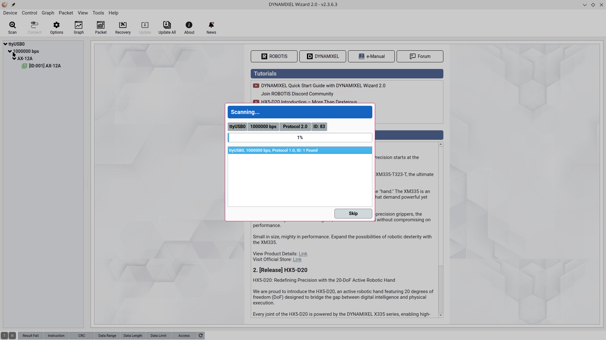
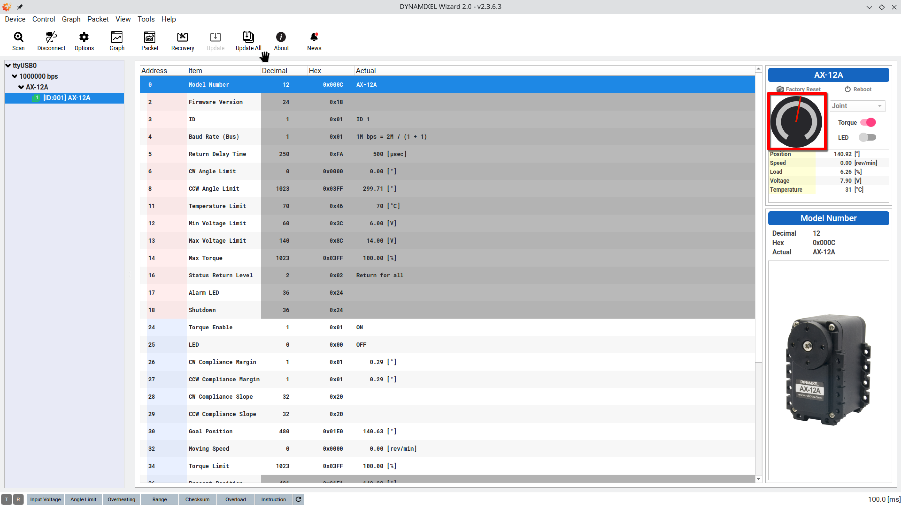

Utiliser le Dynamixel Wizard 2 pour configurer les moteurs
Le Dynamixel Wizard 2 est un logiciel développé par Robotis qui permet de configurer et de tester les moteurs Dynamixel. Il est très utile pour vérifier que les moteurs sont correctement connectés et configurés avant de les utiliser avec ROS.
Après avoir téléchargé et installé le logiciel, vous pouvez suivre les étapes suivantes pour configurer les moteurs de la voiture :
1. connecter l’u2d2
Dans un premier temps, il faut connecter l’u2d2 à votre ordinateur avec un câble USB. Le moteur de direction doit être connecté à la fois à l’u2d2 et à l’alimentation de la voiture.
2. ouvrir Dynamixel Wizard 2
Une fois le logiciel ouvert il faut cliquer sur le bouton « scan » pour détecter le moteur de direction. Il va faire un balayage des ID et des bauderates pour trouver le moteur. Si le moteur est détecté, il apparaîtra dans la liste avec son ID et son bauderate. comme sur la photo suivante :
{kind=link}

maintenant que le moteur est détecté vous pouvez cliquer sur le bouton « skip » et normalement la fenêtre suivante devrait s’ouvrir :
{kind=link}

Vous trouverez les informations du moteur, notamment son ID, son bauderate, sa position actuelle, etc. Vous pouvez également bouger le moteur en cliquant sur la roue entourée en rouge sur la photo précédente.
Avertissement
Attention il faut que vous donniez les autorisations nécessaires au logiciel pour accéder à l’u2d2, sinon il ne pourra pas détecter le moteur.
Pour nous ca a marché directement sur Fedora43 mais sur d’autres systèmes d’exploitation il peut être nécessaire de donner les autorisations manuellement.